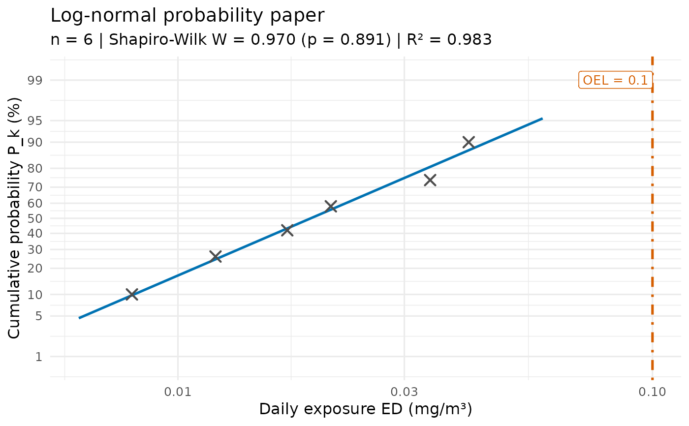

Probability paper plot for examining a similar exposure group (UNE-EN 689)
Source:R/une689_probability.R
une689_probability_plot.RdDraws the daily exposure (ED) values of a similar exposure group on probability paper: the vertical axis is the cumulative probability \(P_k\) on a normal-probability scale and the horizontal axis is the exposure on a logarithmic scale (log-normal paper) when the data are lognormal, or on a linear scale (normal paper) when the data are normal. A straight line is fitted to the points. If all points lie close to the line and none is exceptionally separated from the others, the group is consistent with the assumed distribution.
Usage
une689_probability_plot(
ed,
distribution = c("auto", "lognormal", "normal"),
alpha = 0.05,
vla = NULL,
title = NULL,
subtitle = NULL,
x_label = "Daily exposure ED (mg/m³)",
y_label = "Cumulative probability P_k (%)",
vla_label = "OEL",
digits = 3
)Arguments
- ed
Numeric vector. Daily exposure (ED) values, all strictly positive; between 3 and 5000 values.
- distribution
Character.
"lognormal","normal", or"auto"(default). With"auto"the lognormal distribution is used if the Shapiro-Wilk test onlog(ED)does not reject it at levelalpha; otherwise the normal distribution is used if the test onEDdoes not reject it; if both are rejected, an error is raised. The labels returned byune689_distribution_type()(English or Spanish) are also accepted.- alpha
Numeric. Significance level of the Shapiro-Wilk tests used by
distribution = "auto"(default 0.05).- vla
Optional positive numeric. Occupational exposure limit (mg/m3, expressed as a daily exposure). If supplied, it is drawn as a vertical reference line.
- title, subtitle
Optional character scalars. If
NULL(default) an informative title and subtitle are generated. Use""to suppress the subtitle.- x_label, y_label
Character scalars. Axis labels.
- vla_label
Character scalar. Label of the OEL reference line.
- digits
Non-negative integer. Number of decimal places used in the OEL annotation.
Details
The default subtitle reports the number of observations, the
Shapiro-Wilk statistic and p-value for the chosen distribution, and the
coefficient of determination of the line. See une689_probability_data()
for how the plotting positions and the line are computed.
Requires the 'ggplot2' package.
Examples
if (requireNamespace("ggplot2", quietly = TRUE)) {
ed <- c(0.008, 0.012, 0.017, 0.021, 0.034, 0.041)
une689_probability_plot(ed, vla = 0.1)
}
